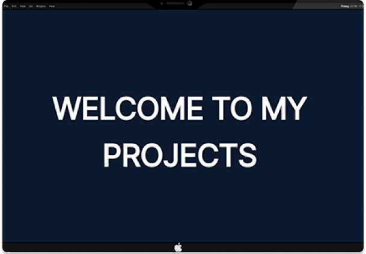
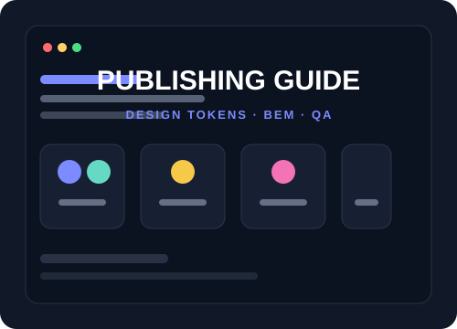
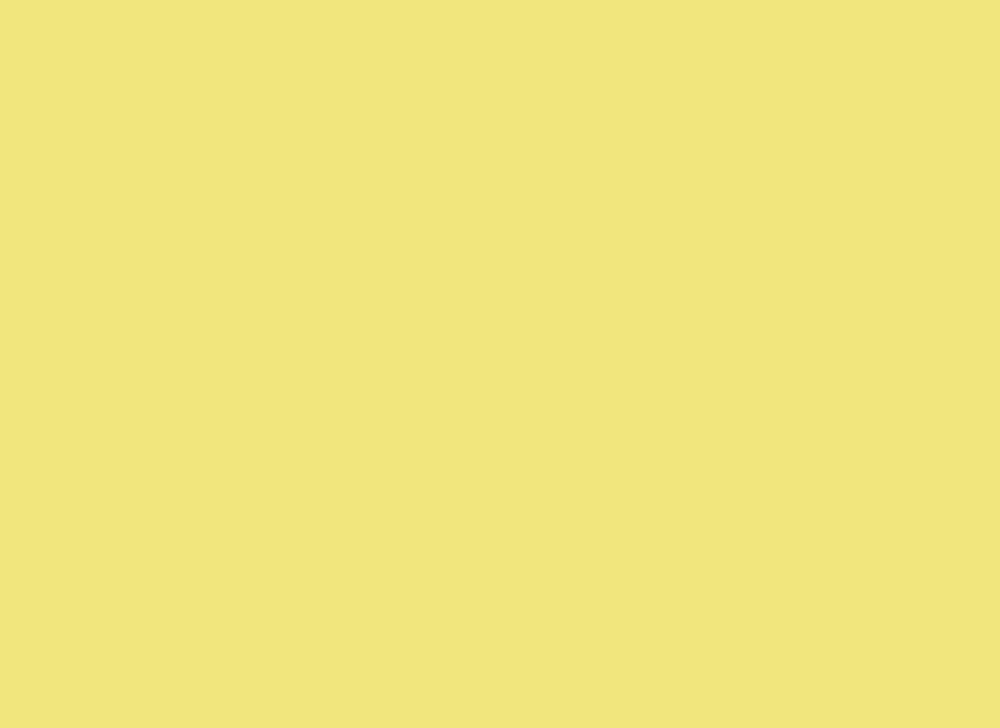
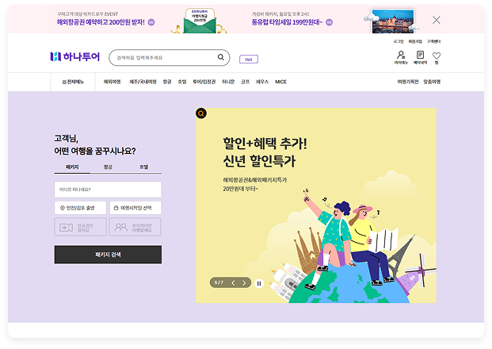
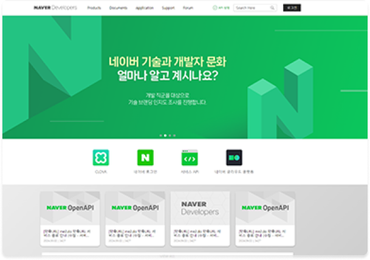
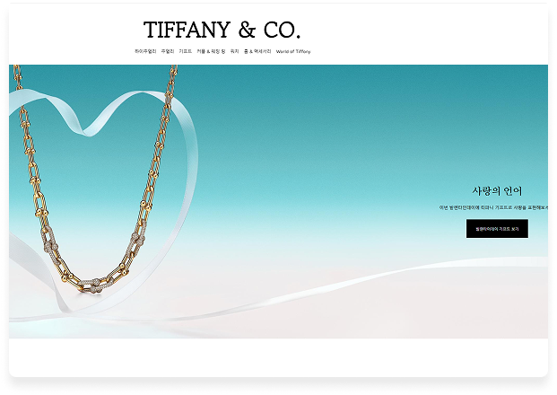
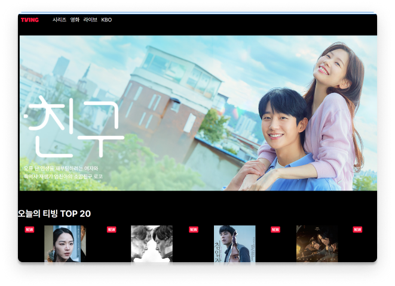

작은 차이가 더 좋은 화면을 만든다고 생각합니다
디자인의 디테일을 놓치지 않고, 사용하기 편하고 완성도 높은 화면으로 구현합니다.
프로젝트 보기퍼블리셔로서의 역량
단순히 화면을 그리는 것을 넘어, 이후 유지보수와 고도화까지 기준을 고려해 작업합니다.
-
01
마크업 & 구조
시맨틱 HTML과 BEM/SCSS 기반의 재사용 가능한 구조를 설계합니다.
-
02
반응형 & 크로스브라우징
모바일부터 데스크톱까지 안정적인 화면을 구현하고 검토합니다.
-
03
인터랙션 구현
GSAP, Swiper, JavaScript로 자연스러운 UI 동작을 구현합니다.
-
04
협업 & 유지보수
명확한 네이밍과 일관된 규칙으로 수정하기 좋은 코드를 만듭니다.
- HTML5
- vue/React
- CSS3 / SCSS
- Tailwind
- 반응형 웹
- JavaScript
- Swiper
- jQuery
- GSAP
Portfolio
6 Projects담당 범위·기간·스택 배치와 명확한 CTA를 갖춘 카드를 세로로 나열했습니다.
PROFESSIONAL PROJECT
-

- 실무 프로젝트
- 인터랙션 퍼블리싱
- 기여도 100%
SK디스커버리·KT닷컴·롯데 등에서 실무로 참여한 프로젝트를 모은 인터랙티브 포트폴리오입니다. 스크롤에 따라 콘텐츠가 반응하며, GSAP ScrollTrigger로 연출을 구성했습니다.
- React
- Tailwind CSS
- GSAP
- ScrollTrigger
SK디스커버리·KT닷컴·롯데 등 실무에서 참여한 프로젝트를 카드 형태로 정리해 제공 GSAP ScrollTrigger를 활용한 스크롤 인터랙션 구현 화면 크기에 따른 반응형 레이아웃 최적화 페이지 구성 요소를 컴포넌트 단위로 분리 애니메이션 타임라인 조정 및 렌더링 성능 개선
ScrollTrigger의 실행 구간과 타이밍을 조정해 자연스러운 스크롤 흐름 구현 섹션별 애니메이션 타임라인을 정리해 동작 구조 개선 중복된 애니메이션 설정을 줄여 코드 가독성 향상 반응형 환경에서 발생하는 애니메이션 위치 오차 보완
PERSONAL PROJECTS
-


- 개인 프로젝트
- 제작 2주
- 퍼블리싱 100%
반복되는 UI 작업에 일관된 기준을 세우기 위한 퍼블리싱 가이드입니다. CSS 디자인 토큰을 기준으로 컴포넌트 스타일과 작성 규칙을 문서화했습니다.
- HTML5
- CSS3
- JavaScript
- Design Token
tokens.css를 기준으로 색상, 간격, 타이포그래피, radius, shadow 값 체계화 Button, Form, Table, Modal 등 반복 사용되는 UI 컴포넌트 문서화 BEM 네이밍, CSS 작성 순서, 접근성 및 QA 기준을 퍼블리싱 규칙으로 정리
화면별로 반복되던 스타일 값을 디자인 토큰으로 정리해 일관된 스타일 적용 반복되는 UI를 컴포넌트 단위로 정리해 작업과 수정이 편리하도록 개선 요구사항, 구현 과정, QA 항목을 구분해 작업 흐름과 검수 기준 정리
-

- 개인 프로젝트
- 제작 3주
- 퍼블리싱 100%
데스크톱과 모바일을 함께 고려한 반응형 여행 예약 사이트입니다. jQuery로 메뉴·탭·슬라이드 인터랙션을 구현했습니다.
- HTML5
- CSS3
- jQuery
- 반응형
PC와 모바일 화면에 대응하는 반응형 여행 예약 레이아웃 구현 jQuery를 활용한 내비게이션 메뉴, 탭, 슬라이드 인터랙션 구현
반복되는 섹션 구조와 스타일을 공통 클래스 단위로 정리해 코드 중복 감소 모바일 화면에서 이미지 크기와 여백을 조정해 콘텐츠 가독성 개선 화면 너비에 따라 메뉴와 콘텐츠가 안정적으로 배치되도록 반응형 화면 구현
-

- 개인 프로젝트
- 제작 1주
- 퍼블리싱 100%
JavaScript의 DOM 조작과 Event Handling을 학습하며 개발한 Desktop 기반 웹사이트입니다. HTML·CSS·JavaScript로 반응형 웹사이트를 제작했습니다.
- HTML5
- CSS3
- JavaScript
- 반응형
Vanilla JavaScript를 활용한 커스텀 슬라이더 구현 마우스 호버 이벤트를 활용한 인터랙션 구현 화면 크기에 대응하는 반응형 레이아웃 구성
Swiper.js 없이 JavaScript로 슬라이더를 직접 구현해 동작 구조 이해 슬라이드 이동, 페이지네이션, 내비게이션 기능을 직접 구성 라이브러리 의존도를 줄이고 DOM 제어 및 이벤트 처리 역량 강화
-

- 개인 프로젝트
- 제작 2주
- 퍼블리싱 100%
모바일 환경에 맞춰 제작한 반응형 프로모션 사이트입니다. Swiper.js로 무한 루프·페이지네이션 슬라이더와 스크롤 위치 기반 내비게이션을 구현했습니다.
- HTML5
- Tailwind CSS
- Swiper
스크롤 위치에 따라 활성화되는 내비게이션 구현 모바일 환경에 맞춘 반응형 레이아웃 구성
Swiper 옵션을 화면 구성에 맞게 조정해 자연스러운 슬라이드 흐름 구현 슬라이드 이동과 페이지네이션 상태가 함께 변경되도록 동작 보완 모바일 화면에 맞게 이미지 크기와 터치 영역을 조정
-

- 개인 프로젝트
- 제작 3주
- 퍼블리싱 100%
OTT 플랫폼을 모델로 제작한 데스크톱 웹 애플리케이션입니다. React 컴포넌트 단위로 화면을 모듈화하고 JSON으로 콘텐츠 데이터를 구조화했습니다.
- React
- Tailwind CSS
React 컴포넌트 기반으로 OTT 콘텐츠 화면 구성 Tailwind CSS를 활용한 반응형 레이아웃 및 인라인 스타일링 구현 JSON 데이터를 활용해 콘텐츠 목록과 슬라이드 화면을 동적으로 렌더링 반복되는 콘텐츠 영역을 컴포넌트로 분리해 화면 구조 정리
반복되는 콘텐츠 영역을 컴포넌트로 분리해 코드 구조와 유지보수성 개선 JSON 데이터와 화면 구조를 분리해 콘텐츠 관리 방식 개선 다중 슬라이드에서 발생하던 상태 및 동작 충돌을 컴포넌트 단위로 분리해 해결 개발 환경 구성부터 빌드와 배포까지 전체 작업 과정 경험